This is Console Tool. Select a console or platform you want to learn about, and information will show up on the right.
PC games are flexible and typically can scale to whatever resolution you give them. However, standard sizing is 16;9, and should look like this.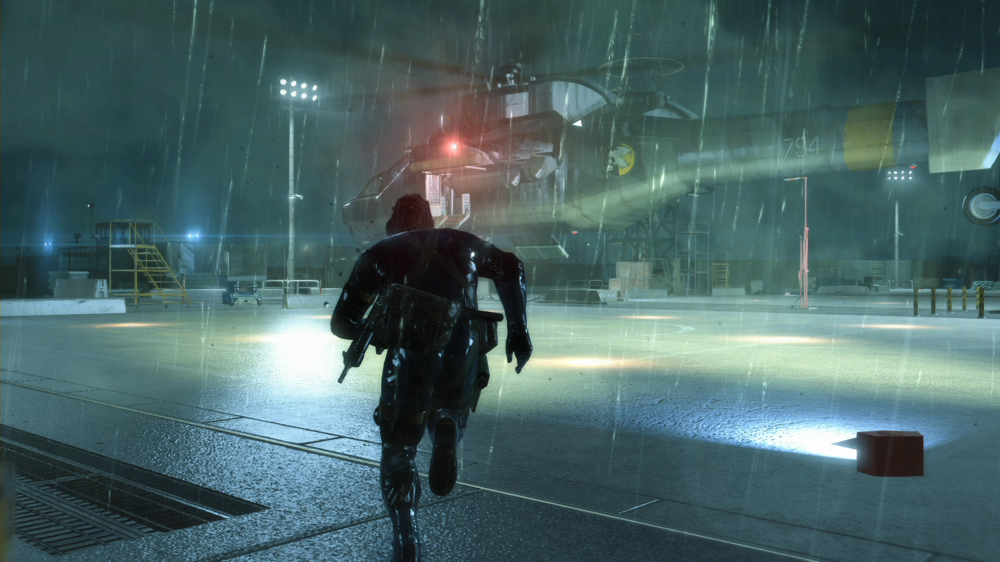
All Xbox 360 and Xbox One games are in 16:9, and should look like this.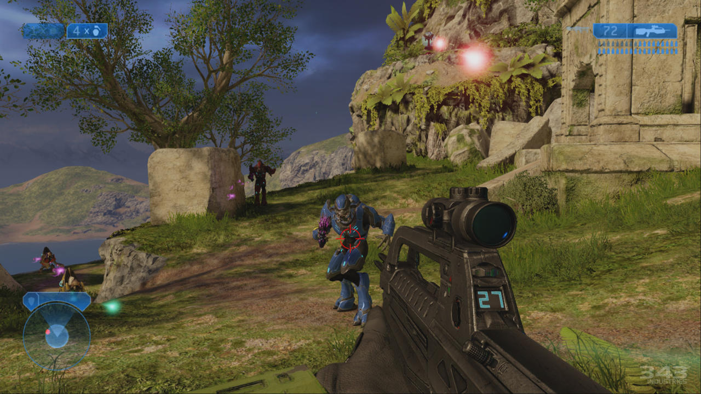
All native WiiU games are 16:9, and should look like this.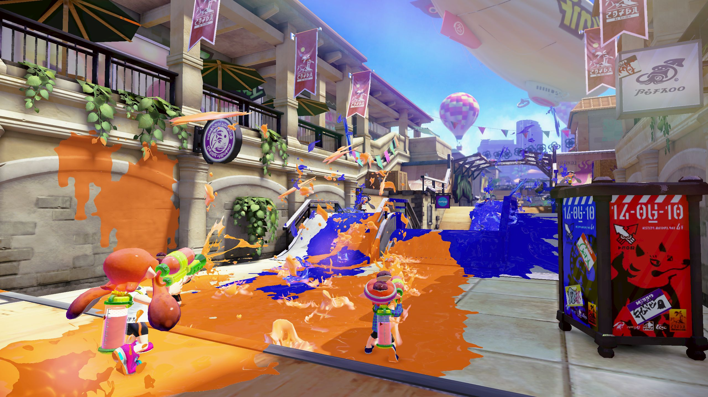 However for Virtual Console games, you should ignore the black bars and refer to the respective games column's for how to crop them.
All PS3 and PS4 games are in 16:9, and should look like this.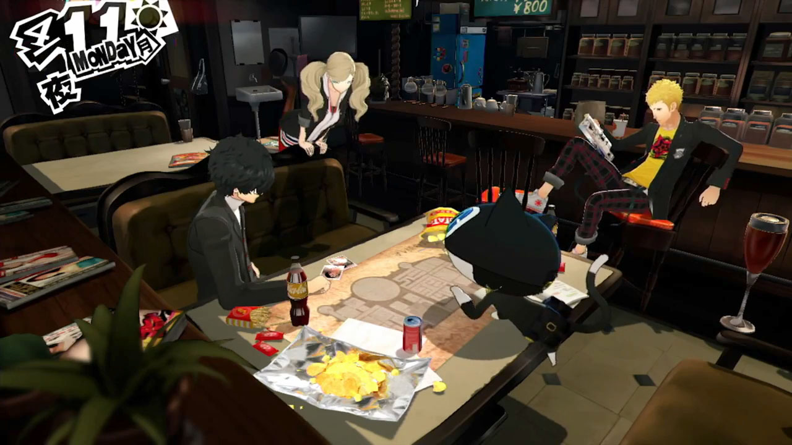 However for PS1 games on PS3, you should refer to the Retro Games' column.
Both DS screens are in 4:3, and should look like this.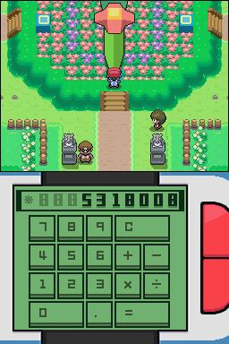 Generally it's reccomended for DS games that when streamed, you have the top screen bigger than the bottom and have the bottom on the side.
The 3DS' 2 screens are at different aspect ratios, with the top being a wider, 5:3 aspect ratio and the bottom being in 4:3. When streamed it should look like this.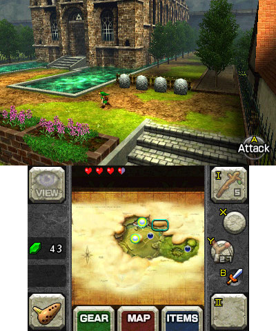
GBA games are in the 3:2 aspect ratio, and should look like this.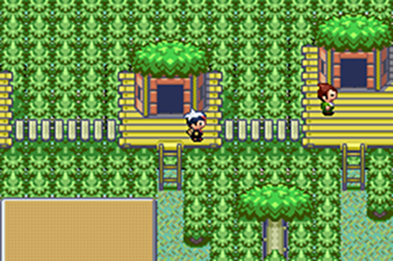 However it's also acceptable to just use a 4:3 game layout when using a Gameboy Player.
Gameboy and Gameboy Color games have a native resolution of 160x144, which loosely translated to 10:9, and should look like this.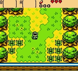
Most Gamecube games are in 4:3 and some support 16:9.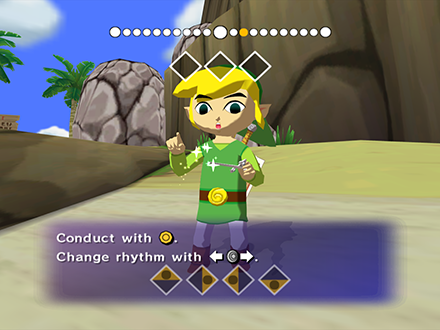 However certain games have unique aspect ratios to be cautious of, such as Super Smash Bros Melee and The Legend of Zelda: The Wind Waker.
Most Wii games support 4:3 AND 16:9. However some only support one or the other. To select an aspect ratio, simply select Widescreen or Standard in Wii System Settings for 16:9 and 4:3 respectively. 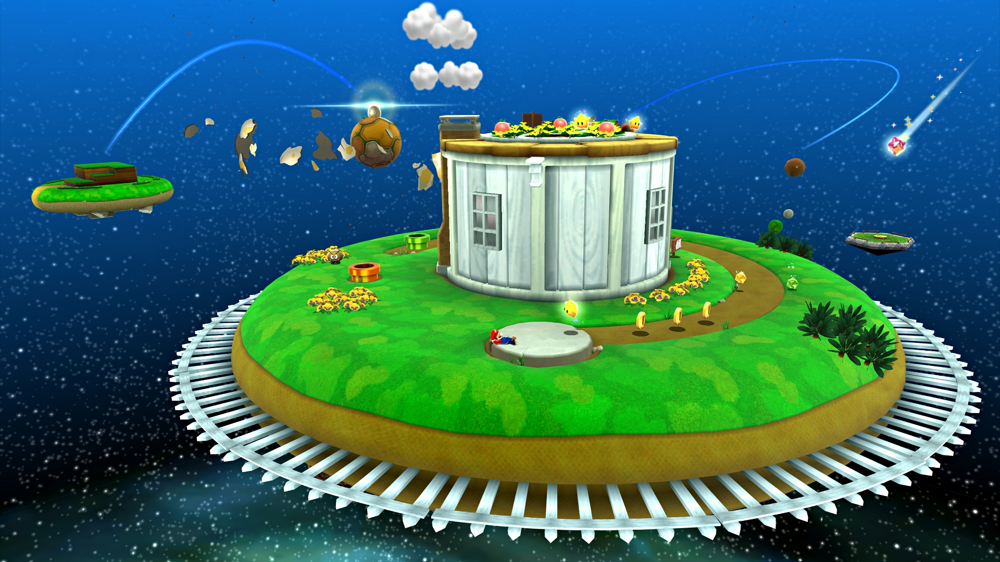
PSP games are in 30:17, which is 2 pixels short of 16:9. The difference is minor, and either one you use in layouts doesn't matter. Your games should look like this.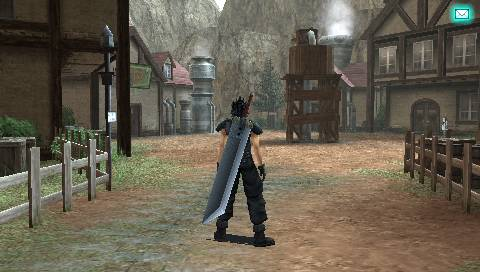 For streaming PS1 games off of a PSP, refer to the Retro Games' column.
Most retro games are 4:3, and should look like this.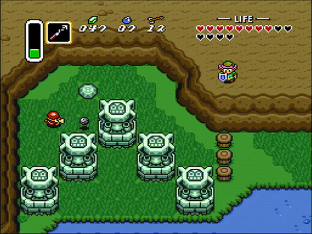